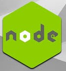

HTML, CSS, JS can make a website with professonal look and smart functions. HTML defines the structure of your content, CSS determines the style and layout, and JavaScript makes the content interactive; therefore, it makes the most sense to learn them in that order.

Django is a high-level Python web framework that encourages rapid development and clean, pragmatic design. Built by experienced developers, it takes care of much of the hassle of web development, so you can focus on writing your app without needing to reinvent the wheel.

Flask is a micro web framework written in Python. It is classified as a microframework because it does not require particular tools or libraries. It has no database abstraction layer, form validation, or any other components where pre-existing third-party libraries provide common functions.

Flask is a micro web framework written in Python. It is classified as a microframework because it does not require particular tools or libraries. It has no database abstraction layer, form validation, or any other components where pre-existing third-party libraries provide common functions.

Node. js is an open-source, cross-platform JavaScript runtime environment and library for running web applications outside the client's browser. Ryan Dahl developed it in 2009, and its latest iteration, version 15.14, was released in April 2021. Node. js runs on the V8 JavaScript engine.